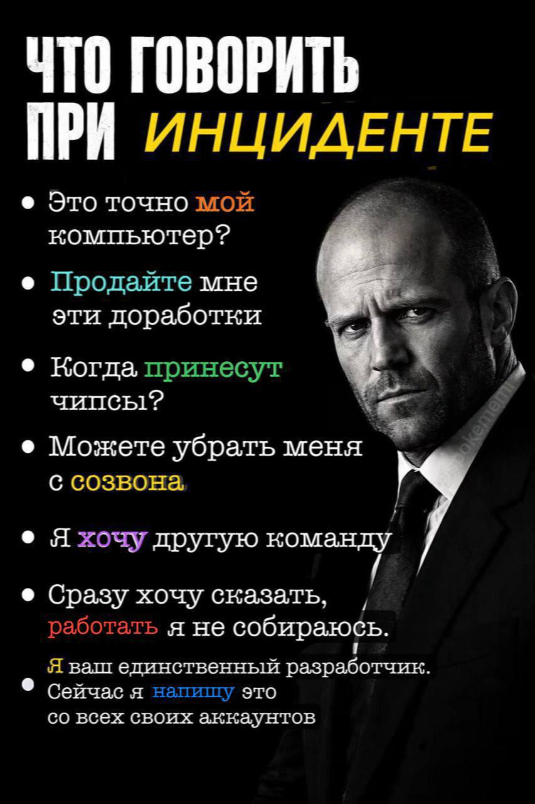

// кто это сделал
Об авторе
Личная информация
- Студент
- Зайцев Виктор Андреевич
- Группа
- 6402-010302D
- Научный руководитель
- Ильясова Наталья Юрьевна, д.т.н., доцент, профессор кафедры технической кибернетики
- Тема диплома
- (предполагаемая) «Разработка технологии интеллектуального анализа изображений МРТ головного мозга для выявления и диагностики метастазов»
Полезные ссылки
Регламент отдела контроля качества

Наследие лабораторной №1 — та же картинка, подключена по пути ../other/memes/incident_qa.png